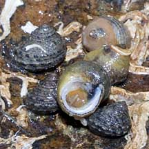
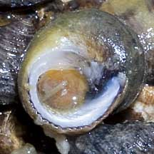
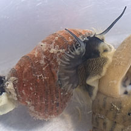
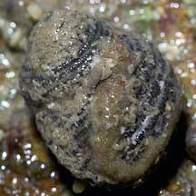
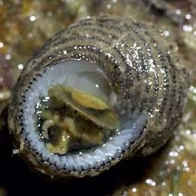
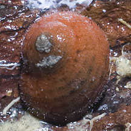
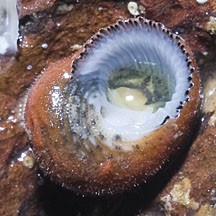
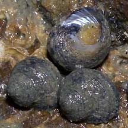
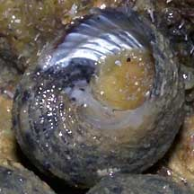
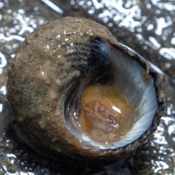

|
|
| shelled snails text index | photo index |
| Phylum Mollusca > Class Gastropoda |
| Tiny
under-a-stone top shell snail Euchelus sp.* Family Chilodontidae updated Jul 2020 Where seen?This tiny snail is often seen in small groups under stones on some of our shores. They were previously placed in Family Trochidae. Features: 1-1.5cm. Shell globular with fine ribs and fine hairs. Shell opening has shiny mother of pearl and is ribbed. Colours black, greyish, dark red or orange. Operculum thin, made of a horn-like material, yellow or orange. Body pale, edge of the mantle fringed with tentacles. Small foot pale on the underside, fine black stripes on the upperside. A pair of long tentacles at the head. Several species listed for Singapore may look like this. These include Euchelus asper, Euchelus atratus and Euchelus quadricarinatus. On this website, they are grouped by external features for convenience of display. |
 Changi, Dec 10 |
 |
 Cyrene Reef, May 12 |
 Labrador, Mar 05  |
 Lazarus, Aug 12  |
 Chek Jawa, May 05  |
*Species are difficult to positively identify without close examination.
On this website, they are grouped by external features for convenience of display.
| Tiny under-a-stone top shell snails on Singapore shores |
On wildsingapore
flickr
|
| Other sightings on Singapore shores |
 |
| Family
Chilodontidae recorded for Singapore from Tan Siong Kiat and Henrietta P. M. Woo, 2010 Preliminary Checklist of The Molluscs of Singapore. in red are those listed among the threatened animals of Singapore from Davison, G.W. H. and P. K. L. Ng and Ho Hua Chew, 2008. The Singapore Red Data Book: Threatened plants and animals of Singapore. ^from WORMS.
|
References
|